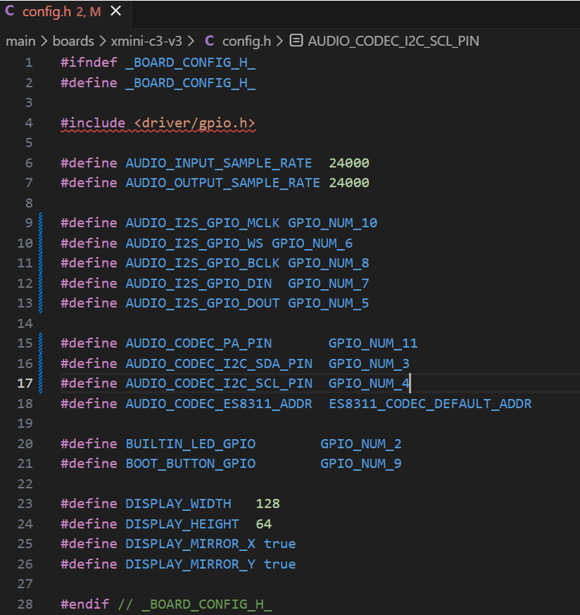

小智|ESP32-c3
前言
单子，仅作记录。目前使用面包板测试 ,芯片是esp32c3，个人工程仓库
工程配置
环境配置文档
本质是一套名为Kconfig的配置系统，核心逻辑是“条件编译”，在Kconfig.projbuild中配置
各种选项，调用menuconfig命令生成可视化，再生成sdkconfig，然后变成sdkconfig.h其中有
各种宏定义，再在CMake中构建过滤。相关语法：
- select (反向依赖 / 强行绑定)
- 互斥 choice (单选按钮)
- default … if … (条件默认值)
自定义配置
https://github.com/78/xiaozhi-esp32/blob/main/docs/custom-board.md
拉下仓库后在config.h修改引脚
idf.py menuconfig的小智配置中，使能唤醒。
本博客所有文章除特别声明外，均采用 CC BY-NC-SA 4.0 许可协议。转载请注明来自 DIKLE | 记录！